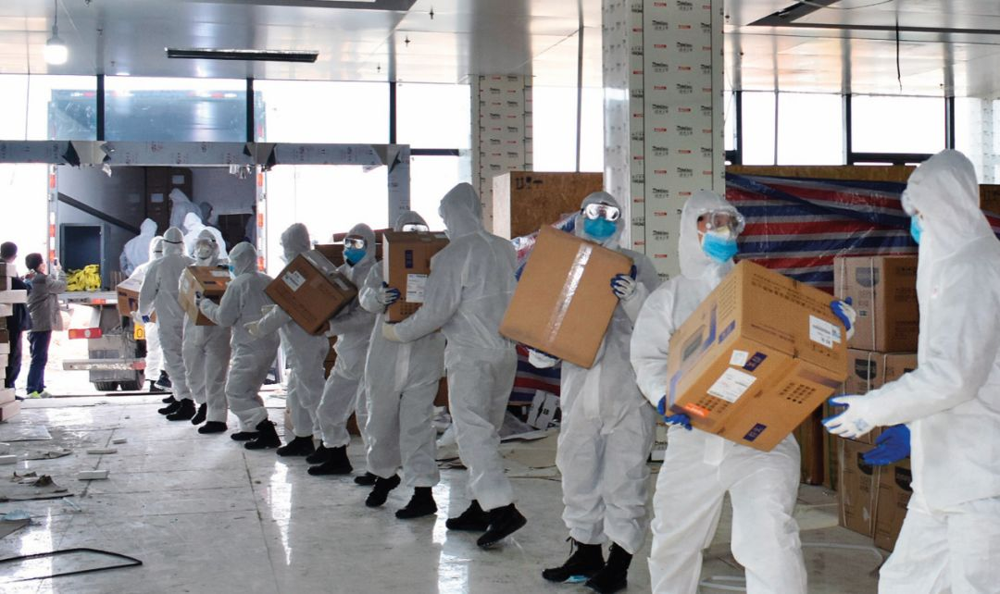

新冠疫情统计数字背后：有的患者直到去世也未能确诊 岳父发烧9天，妻子发烧6天，CT报告都显示“双肺严重感染”，却一直没能得到检测，确认是不…
原文链接 备份链接 来源：雪球App，作者： 八点健闻，（https://xueqiu.com/1553077980/140215390） 岳父发烧9天 ，妻子发烧6天 ，CT报告都显示“双肺严重感染” ，却一直没能得到检测 ，确认是不是 …

如何避免成为第二个武汉
是当前抗疫中湖北其他城市的共同命题

1月29日，武警湖北总队黄冈支队官兵为担负隔离任务的大别山区域医疗中心抢运物资。图/新华
岂止武汉：湖北疫情告急
*本刊记者/**徐天 鲍安琪 霍思伊*
发于2020.2.17总第935期《中国新闻周刊》
1月21日，黄冈成为武汉之外首次通报确诊病例的湖北城市。1月27日，随着神农架林区首次通报确诊病例，湖北省12个地级市、1个自治州、4个省直辖县级行政单位全部通报了确诊病例。
1月23日，湖北各地市发布了定点医院名单。当天，武汉“封城”，鄂州、黄冈等城市紧随其后，四天内，除了山林遍布的神农架以外，湖北各地市都进入“封城”状态。
“黄冈告急”“孝感告急”“鄂州告急”“随州告急”“天门告急”……随着确诊数不断攀升，床位紧张、医护人员紧缺、物资难以为继，类似的报道在媒体上轮番出现。
相较武汉坐拥几十家三甲医院的医疗资源，根据《中国新闻周刊》统计，湖北其余地市所拥有的三甲综合类医院，最多的四家，比如宜昌；多数只有一家，包括黄冈、孝感、随州、鄂州、黄石、咸宁；有的甚至一家也没有，比如神农架林区。
1月29日，湖北省长王晓东在发布会上说，“决不能让黄冈成为第二个武汉”，他同时也提到了孝感等其他城市。
如何避免成为第二个武汉，是抗疫中湖北其他城市的共同命题。
不断攀升的确诊人数
孝感和黄冈，因其极高的确诊人数，成为这次疫情中除武汉外最引人关注的湖北省内城市。截至2月10日24时，孝感累计确诊2642人，黄冈累计确诊2332人，比确诊人数排在其后的随州（1095人）多出了一倍。
作为省内地理上离武汉最近、来往最密切的两个城市，黄冈和孝感均在武汉一小时高铁圈内。而作为省内户籍人口排名第二（黄冈740.64万）和第五（孝感517.54万）的两座城市，庞大的人口基数与便捷的交通都注定了其与武汉的来往人口数量。
百度的大数据显示，春运高峰的1月16日~22日，黄冈和孝感是武汉市流动人口最主要的两个目的地，每天会接纳武汉超过25％的外流人员。

黄冈市副市长陈少敏说，武汉实行交通管制之前，出城人员中14％到达了黄冈，约70万人。孝感市长吴海涛说，在第一轮全面摸排中，孝感市摸排506万人，其中武汉返乡人员有39.35万人。摸排发现发热人员11524人，其中武汉返乡人员4509人。截至1月31日的确诊和疑似病例中，武汉返乡人员占比分别为60％和66％。
目前在湖北省内确诊数较高的其他几个城市，包括荆州、襄阳、随州、黄石、宜昌，也都是百度大数据所显示的，封城前一周与武汉来往最密切的一批城市。
最近几天，还有两座城市的确诊人数引起外界关注，分别是在湖北地级市中人口最少的鄂州、随州，截至2月10日24时，这两座城市累计确诊人数却分别高达790人、1095人，后者已跃至湖北确诊人数的第四位。
鄂州地处黄冈与武汉之间，面积小，但与武汉联结十分紧密，城际铁路前往武汉不到半小时，用当地人的话说，“买房在武汉、就业在武汉”。随州位置稍远，但作为农业大市，有不少人在武汉打工。随州市长克克说，节前从武汉返回随州的人员有11.2万人，其中80％都是来自农村。
另外值得注意的，是新增确诊数的变化。这一数据不仅与感染人数、人口基数相关，还与核酸检测能力的变化有关，黄冈、孝感的数据变化都能说明这一问题。
从封城到2月初，核酸检测工作一直是湖北省内各地市的一块心病。中央派往黄冈的督察组给出的意见中，就包括抓紧完善检测方案，优化检测流程，加快检测速度。
1月16日之前，核酸检测权在国家疾控中心。之后，国家把检测权下放给湖北省疾控中心，检测能力在每天300例左右。1月20日之后，地市有了检测权，但需要将第一次检测结果送省里复核。因此才有了1月22日黄冈首次通报确诊病例，以及1月24日孝感首次通报确诊病例。
一开始，试剂盒的供应并不充足，地市各医院在送检时都比较谨慎。黄冈某乡镇医院护士长李玲（化名）告诉《中国新闻周刊》，医院对就诊病人进行体温排查，之后通过抽血、咽拭子以及胸部CT复查，怀疑是疑似病例的，就收治进来，一人一间，避免交叉感染。如果观察的三日内持续发烧，再请区级人民医院会诊，若被认为是疑似病例，再送区级人民医院进行下一步的确诊等步骤。多的时候，该乡镇医院住过十多个疑似病例。
后来，各地市的试剂盒供应逐渐充足，但限于检测人手不足，检测速度仍然不快。黄冈、孝感也都曾公开呼吁，需充实检测人员。
黄冈的变化始于1月29日，麻城、浠水两县被允许进行检测，确诊数据有所提升。之后的几天，来自国家疾控中心的8名人员、中科院武汉病毒所的5名人员以及云南疾控中心的4名人员依次到岗，充实黄冈疾控中心实验室检测人手，快速提升了其疑似病例送检速度。
确诊数字在短期内有了快速提升。当时，黄冈市长邱丽新说，到2月2日，黄冈现存的1000多例疑似病例很快就会检测完毕，而当中可能有很大比例是确诊病例，所以这两天黄冈的确诊病例还会有大幅度的提升。确实，2月1日和2月2日是黄冈截至目前单日新增的两个峰值，分别是276、244。
孝感市也在1月31日迎来了国家疾控中心的4名支援人员，其确诊数字也在之后有了提升。
湖北省副省长杨云彦提供了一组数据，当时，中国疾控中心共有83位实验室检测人员支援湖北。2月5日当天，全省检测样本12277例，武汉市检测样本6500份。
也正是从这一天起，黄冈、孝感这两座城市的累计确诊人数排名有了变化。截至当天24时，孝感市的确诊病例首次超过黄冈，成为湖北省乃至全国确诊人数仅次于武汉的城市，新增424例，总数达1886例；而黄冈新增162例，总数为1807例。
孝感市卫健委副主任戴杰群在接受采访时表示，这主要是因为孝感市集中力量开展采样、送检、确诊，两天来共送检样本2155份，这些样本中主要是来自发热门诊隔离观察的病人、之前由于检测能力跟不上而没有及时检测的隔离治疗的疑似病人。
孝感市云梦县人民医院党总支书记刘厚慧也确认了这一说法。最近一段时间，云梦县人民医院将疑似病例的样本通通上交检测。
孝感市长吴海涛对媒体表示，自2月1日至6日，孝感市送检样本5668份，是此前累计送检样本数量的1.83倍。目前孝感市已基本完成了累积的疑似病例检测。另外，凡是发热门诊留观和收治入院的疑似病例都纳入检测对象。其中从发热门诊留观人员中取样送检3708份，为大量真正的患者缩短了确诊时间。
床位扩充，能快则快
不断攀升的确诊和疑似病例人数之下，首要问题是，病床数够不够？经济基础薄弱、确诊人数更多的城市，在此问题上面临着更大的压力，比如黄冈。
2月1日，黄冈市长邱丽新在新闻发布会上公开黄冈床位数，全市29家定点医院共可提供4200张床、2831间房。从首次公开确诊人数到当前，从市区到乡镇农村，黄冈的床位进行了数轮扩充。
1月21日，在钟南山宣布新冠肺炎可以人传人的第二天，黄冈确定了13家定点医院和29个发热门诊。市区有三家定点医院，分别是市传染病医院、惠民医院以及龙王山老年公寓，一共360张床位。
三天之后，随着病例的快速增加，黄冈市决定，紧急启动还没有完全竣工的大别山区域医疗中心（简称大别山医疗中心）——这是黄冈市中心医院的新院区，原本将于今年5月搬迁。这个黄冈版“小汤山”可以额外提供1000多张床位。
据媒体报道，因分级诊疗制度，县乡医院承担着兜底收治的功能。黄冈某乡镇医院护士长李玲（化名）告诉《中国新闻周刊》，1月24日，医院将内科的数层楼都全部改造成隔离病房。曾有媒体报道，黄冈市蕲春县刘河镇卫生院于1月31日建好的“发热病房”，是一处驾校内1200平方米的板房中设置的8个集装箱，这个小镇的“小汤山”能安置40位病人。
紧急情况下启用的病床、病房，符合“传染病房”的标准吗？答案并不乐观。
衡阳市中心医院重症监护科副主任医师刘军是湖南衡阳驰援黄冈的医疗队队长，他告诉《中国新闻周刊》，黄冈市区的惠民医院是社区医院，无法承担危重病人的抢救与治疗。成为定点医院后，临时改造出隔离区，增加床位。
黄冈市传染病医院也类似。孙亮（化名）告诉《中国新闻周刊》，他的父亲在确诊之后，几次三番地央求发热门诊的医生，终于住进市传染病医院。父亲告诉孙亮，医院条件简陋。此时情况已较严重的他，甚至无法全天监测血氧。入住两天后，父亲去世。给孙亮打的最后一个电话，是希望能在第二天早上喝上一口热稀饭——医院的微波炉很少，而他已无法下床去加热菜饭了。
而黄冈市区内的第三家定点医院，甚至都不是一家医院，只是一座老年公寓，临时开辟出来用作疑似患者的隔离区。
哪怕是被称为黄冈版“小汤山”的大别山医疗中心，在衡阳医疗队进入时，仍然非常简陋。防水地面、床铺以及简单隔离虽已备齐，但该中心本身并不是按照传染病医院的规格打造的，属于临时改造，护士站、医生站与病房是相通的。而传染病病房要求，患者和医护人员的出入通道应有明晰的划分，并设有污染区和缓冲区，确保切断感染源，这些大别山医疗中心都没有。刘军等人临时用塑料板、木板等对这些通道做了简单划分，更多的仍然靠个人防护。
快速增加的病例，并没有给湖北各地市建设专业病房的时间。
1月22日，黄石市中医院团城山院区腾空感染科，用于确诊病例的定点收治，五天后，院区全部腾空，整体作为新型冠状病毒肺炎患者确诊收治的病区；1月29日，鄂州在原有医院老院区的基础上开建雷山医院，用“集装箱+活动板房”形式，共设计病房386间，772个床位，预计2月15日交付使用；2月1日，十堰市新冠肺炎第二救治医院交付使用，前期开设三个病区，可容纳100个床位……
湖北省副省长杨云彦说，截至1月31日24时，在武汉之外，湖北共确立了120家定点医院，加强现有病床的征用改造，同时要求各地按照科学救治和能快则快的原则，通过改建、扩建现有的医疗机构集中新建救治医院，或以征用宾馆、饭店等形式来加快增加救治场所。
新冠肺炎蔓延以来，防止交叉感染的传染病房三区（清洁区、污染区和半污染区）、两通道（医务人员通道和病人通道）在不少临时腾出的病区内只能勉强实现。
收治确诊病人之外，疑似病例、无法排除感染可能的发热患者以及确诊患者的密切接触者也引发各界关注。这批人是防控的重点，如果控制不好，他们将成为“移动传染源”。
2月2日，武汉市提出，要对上述几类人员进行集中收治和隔离工作，随后，湖北省也将此要求正式下发给各地市。
孝感市卫健委告诉媒体，截至2月9日，孝感市设立了142个发热病人集中留观点，主要是宾馆、学校等场所，共有5111个房间。
刘厚慧告诉《中国新闻周刊》，作为二甲医院，其诸多科室都已停诊，将病区腾出来，收治疑似患者，“医院本部基本都为发热病人服务了，其他诊疗能往后放就往后放了。”
云梦县招商局局长柳骏告诉《中国新闻周刊》，云梦县征用了17个酒店留观发热病人以及确诊患者的密切接触者，招商局负责其中一个酒店，留观密切接触者40多人，一人一间。一旦发现其中有人发热，立即送往发热门诊。
紧急招募医务志愿者
国家卫健委高级别专家组成员李兰娟曾在接受采访时说，这次疫情之下，在全国其他各地是很多医生服务几个病人，而在湖北，则是一个医生要照护好多病人，所以医务人员非常辛苦，医疗资源短缺等问题也显示出来。
以常住人口来计算，湖北各地市每千人拥有执业医师数，除了荆州、潜江并未在2018年的公报中公布具体数据之外，最紧张的是随州、孝感，分别是1.83和1.89人，另外天门、黄冈、鄂州，均在2人左右，武汉在3.45人左右。
从绝对值看，排除几个县级市的特殊情况，各地级市所拥有的执业医师，鄂州、随州、黄石、荆门、恩施、孝感均低于10000人，武汉则拥有38200人。不难想象，各地市确诊和疑似病例的不断攀升，给医护人员带来了极大的压力。
1月25日左右，各省分别选派由呼吸内科、传染病科、重症医学科组成的医疗队赶赴湖北各地市，增援当地医护力量。
不过，仍有几个地市在此后发出了求援信息。
1月27日，黄冈防控指挥部率先请求国家支持调派人员支援。因为黄冈临床需求极大，医疗救治力量薄弱，虽然有湖南、山东两支医疗队伍增援，但救援力量都集中在市一级，县乡两级医务人员、检测技术人才仍然严重不足。急需流行病学专家6人，检验检测专家4人，呼吸、重症、感染等专业医生523人，护理人员911人。
2月6日，随州也在发布会上呼吁，全市缺医护人员718人，其中专业医生212人，护士506人。
当天，湖北省副省长杨云彦也提到，目前的医务人员还是有缺口，有9个市州请求支援医护人员。初步统计缺口有2250人左右，且这是较为保守的数据。
另一种求援方式，是求助志愿者。
2月3日，襄阳防控指挥部公开发布公告，招募医务志愿者。一天半内，603人报名，初步审核出具备资质的326人，几天后，46名志愿者陆续上岗。
与此同时，感染率、病死率都在湖北排名较前的鄂州发出倡议，希望60周岁以下（视身体情况，可适当放宽），身体健康的退休、离职医护人员和个体医务工作者积极参与疫情防控工作。几天后，有97人报名参加，目前已有志愿者到岗。
求援信息中，值得注意的是，黄冈、随州都提到了对“重症医学科、感染科、呼吸科”等医生的需求，可以说，这些专业医生对于各地重症，尤其是危重症的治疗至关重要，某种程度上说，病死率也与此相关。
随州就曾在发布会上公开表示，对确诊病例中的危重症患者原则上在市中心医院进行集中救治，尽最大努力降低病死率。
随州曾向上级请求给予医护人员支援。2月5日，湖北省安排省肿瘤医院的31人医疗队连夜驰援随州。该医疗队队长朱定成告诉《中国新闻周刊》，随州提出的要求，即希望重症医学科给予支援，当时，随州已有834例确诊，9例死亡。
支援队的31人由重症医学科的10名医生、6名护士以及其他普通病房的15名护士组成。这其中，10名医疗专家分四个小组分别进入随州中心医院重症医学科和感染性疾病一病区、二病区、四病区参与科室值班，指导和帮助治疗危重患者。据了解，目前随州市共有32名危重患者和33名重症患者。
当前，湖北省病死率最引人关注的城市，除了武汉就是天门。截至2月10日24时，天门市累计确诊261例，死亡10例。3.83％的病死率仅低于武汉市的4.05％，超过了其他地市。
天门市新型冠状病毒感染的肺炎防控指挥部告诉《中国新闻周刊》，这10个死亡病例，发生于1月27日至2月2日。其中，有5例入院第二天即死亡，有5例合并其他基础疾病死亡。
2月8日，国家专家组到天门指导救治工作，包括省卫健委党组成员、副主任涂远超，中华医学重症医学分会主任委员、中山大学附属第一医院重症医学科主任管向东，北京地坛医院感染二科主任医师蒋荣猛等。
防控指挥部介绍，当时专家组认为，有5例入院第二天即死亡，失去了早期治疗时机，因此强调及时就诊；有5例合并尿毒症、糖尿病等基础疾病死亡，因此强调应加强多学科协作，合理整合相关专业，做到“一人一策”。另外，天门死亡率高的问题还有诸多因素，比如确诊核酸检测阳性病例少是原因之一，不符合全省阳性率的规律，要从标本采集规范、实验室质量控制等多方面认真分析原因加以改进。
或许是出于上述原因，2月10日天门新增确诊44例，是此前单日新增的两倍。截至2月10日24时，天门市仍有重症病例96例，危重病例3例，占据目前接受治疗的239名患者的41.4％。
2月7日，国家卫健委医政医管局监察专员郭燕红在新闻发布会上表示，将建立16个省支援武汉以外地市的对口支援关系，全力支持湖北省加强病人的救治工作。
目前，这批支援医护人员正在一一到位阶段，各地此后的治愈率和病死率还有待观察。
“口罩去哪儿了？”
“我们慈善总会这边，N95（口罩）、医用防护服库存为零！”
2月8日下午，孝感市慈善总会接受媒体采访，紧急求助医用物资。自1月25日前后，武汉之外各城市医院求助社会，希望各界能驰援快速检测试剂盒、体温枪、医用N95口罩、医用口罩、护目镜、防护服、消毒液等医疗用品以来，类似的求助始终在反复发生，未曾好转。而在确诊人数最多的孝感、黄冈，这一矛盾十分突出。
刘军所在的湖南衡阳驰援黄冈医疗队，刚进入大别山医疗中心时，防护用品十分紧张。他们通常是在满足最基本医疗人员配比的基础上，有计划地分组进入污染区。物资实在缺得厉害时，再向大别山医疗中心的相关领导催要。
大别山医疗中心尚且如此，市县乃至乡镇医院的物资更是难以满足。黄冈市黄州总医院医疗物资采购负责人张志刚告诉《中国新闻周刊》，去年12月底，肺炎的消息刚传出时，医院就陆续采购了数批医用N95口罩。最后一次采购在春节前，当时，货源已极度紧张，三万个口罩来自陕西，价格从每个4.5元涨价到9.5元。
张志刚表示，每天都有人来向他催要口罩，“但我真的没办法，有时候吵得急了，也会让人拿走5个、10个的，重点科室自己分配一下。现在你去这些医院看，普通科室的医生和护士没有人戴N95。”
医院只能优先保障发热门诊，传染科和CT室这些风险最大的科室。其他科室则退而求其次，保障外科口罩、医用护理口罩或者工业标准的口罩。
刘厚慧有着同样的焦虑。与黄州总医院相似，孝感市云梦县人民医院同样只能给隔离病区、感染科等风险最大的科室勉强提供医用N95口罩，其他科室则全部是普通口罩，院领导也不例外。
春节之前，云梦县人民医院采购了几十个医用N95口罩、几十套医用防护服。按往年经验，有两年保质期的防护服通常都用不上，最终一般都报损。
这是区县以及乡镇医院的常态，受资金链所限，加上这些年传染病也很少，医用防护服、医用N95口罩都备得不多。疫情初始时，若哪个基层医院能有百套防护服的库存，就算很多的了。
1月28日晚，医院的医用N95口罩即将断货，经协调，他们紧急派车去武汉运回了500多个他人捐赠的口罩。
一位不愿意具名的采访对象表示，上级分发的物资，即使有好的，也很少会给县一级。面对窘境，各地方采取的方法无外乎几种：采买、等待定向捐赠及上级调发。
春节前后，云梦县成立物资保障组，招商局局长柳骏成为编外人员，因其人脉广、与外界来往多，与经信局、工商联、商务局一起，负责开拓物资渠道，广撒网。
疫情之前，医院的物资采购要通过省内统一采购平台，平台对相关企业有过一轮筛选，医院在此范围内选择、议价，经医院相关部门负责人共同讨论，最终签约。通常来说，与医院签约的通常是经销商，少有厂方直接来签的。
疫情发生之后，采买方通常要脱离中间采购平台，找经销商、生产厂。双方可能从未打过交道，又没有可信任的中间平台，信任危机就此产生。云梦县通常选择老乡做中间担保人，联系货源或渠道。比如，通过一位在外省的老乡拜托他的朋友在迪拜采买2万个口罩，经飞机运回上海，再抵达湖北。
也有民间志愿者组织在此过程中承担委托购买的角色。志愿者郭飞是在深圳创业的孝感人，他在除夕夜建群，更多志愿者加入，形成物资开拓、物资跟进、物流保障、财务公开、机构委托采购组等几类分组。渐渐地，包括孝感市中心医院（三甲）在内的60余家孝感市、区县以及乡镇医院也逐渐加入。医院、民间志愿者、官方共同形成了这个“医疗需求联合体”。
几方人员在采买过程中均发现，许多防护用具厂家已逐渐被当地政府接管，无法自行买卖给湖北各地市，个别地方已出现地方保护主义的苗头。郭飞介绍，一批来自江西省南昌市进贤县的手套，司机带着防疫指挥部开的各类加盖红章的证明去拉货，却被当地在县境截住，一天一夜后，经过孝感以及其他区县不断与当地协调沟通，这批货才被放了出来。他们还曾联系安徽的酒精厂，但对方已被接管，不卖，“我们没厂，只有靠买。你不卖，我咋整？”
而截至2月4日，工信部已协调国内生产的企业累计向湖北发送医用防护服21.9万件、护目镜23.3万个；截至2月7日，全国口罩生产企业产能利用率已经达到73％，其中医用口罩产能利用率已经达到87％。
但近几天来，各地市的不少医院仍在不断向外界发出求援信息，口罩、防护服、隔离衣、酒精等仍然处于紧平衡状态。“物资到底去了哪里？”不止一位采访对象提出这个疑问，但至今仍然没有得到回答。

值班编辑：石若萧
推荐阅读
▼

图片故事| 方舱医院
暂停各类高校就业现场招聘，这届毕业生太难了

原文链接 备份链接 来源：雪球App，作者： 八点健闻，（https://xueqiu.com/1553077980/140215390） 岳父发烧9天 ，妻子发烧6天 ，CT报告都显示“双肺严重感染” ，却一直没能得到检测 ，确认是不是 …
原文链接 备份链接 【财新网】（记者 周泰来 黄姝伦 实习记者 黄晏浩）从2月5日开始，湖北孝感市新冠肺炎累计确诊病例数超过黄冈，成为在武汉之后全国第二大疫区。截至2月8日24时，孝感市累计确诊2436例，高于黄冈市的2141例。据新华 …
原文链接 备份链接 在医学专家们看来，集中收留、隔离是第一步。接下来对疑似病患的确诊、分类诊治、收治入院，将是对医疗、物资、人员分配等多重资源配置能力的综合考验，相信各方面群策群力可以渡过难关 文 |《财经》 …
原文链接 备份链接 在医学专家们看来，集中收留、隔离是第一步。接下来对疑似病患的确诊、分类诊治、收治入院，将是对医疗、物资、人员分配等多重资源配置能力的综合考验，相信各方面群策群力可以渡过难关 2月3号上午8点，人们在七医院门口排队等待核 …
原文链接 备份链接 有多少疑似？ 326份CT检查报告单，除了60份不发热的其他病例，剩下的266份CT报告，136例显示“肺部感染，呈多发磨玻璃样高密度影”。1月22日，湖北省新华医院放射科医生李云华手颤抖着数完，沉默了许久。这些前一 …